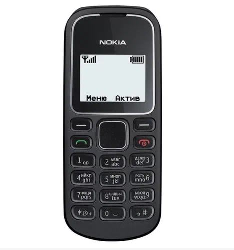
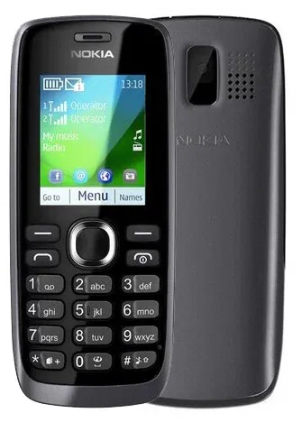
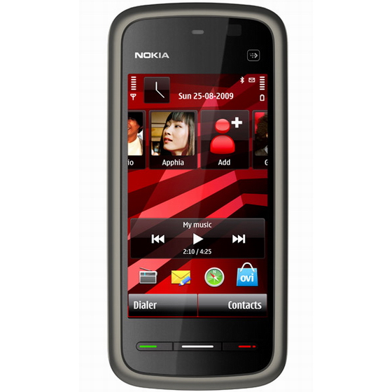

Коллекции
Здесь буду публиковать свою коллекцию ретро телефонов :)
Nokia 1280

Nokia 112

Nokia 5230




Nokia 1280 появилась у нашей бабушки, только не в черном цветве, а в лиловом. В нем я проходил Bounce, Snake Xenzia и Beach Rally, когда я ездил на электричке. Мне бабушка довольно часто давала поиграть, несмотря на то что у меня был до этого Nokia 112. Игры на монохромнике мне всегда казались интересными даже по сей день, а заряд при игре вообще не тратился от слова совсем, стабильно держал неделями. Ну и вот я на Авито решил её прикупить как память о прошлом, да и поиграть в эти же самые игрульки и послушать те самые рингтоны.
Моя первая Nokia которая появилась в 2012-13ом году, когда только-только я пошел с ним в первый класс, играл раньше там в разные игрульки которые передавали по блютузу, музыку на нем слушал, да и темы друг-другу передавали, я никогда не забуду ту тему которая стояла на телефоне у нас с братом (я её выклянчил), ну и потом в 3-4 классе перешел уже на Samsung Galaxy Star 2
Когда у папы был Nokia 5800, я хотел такой-же но только аналог подешевле, частенько видел его в газетах и именно его я хотел попросить у папы. Но мне так его не купили когда я был во втором классе, но спустя время, я все же осуществил свое желание хоть и слишком поздно :)